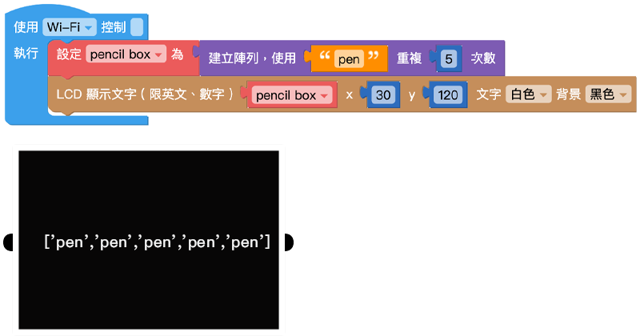
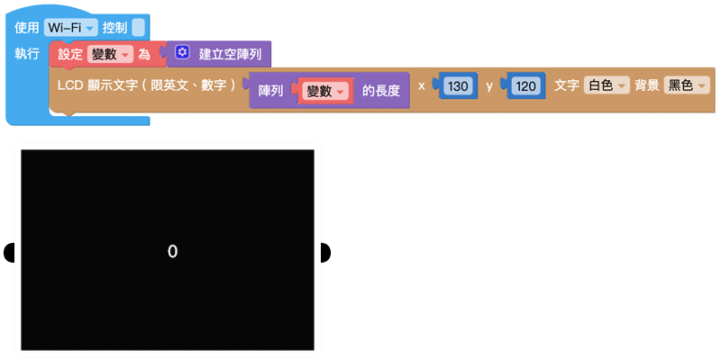
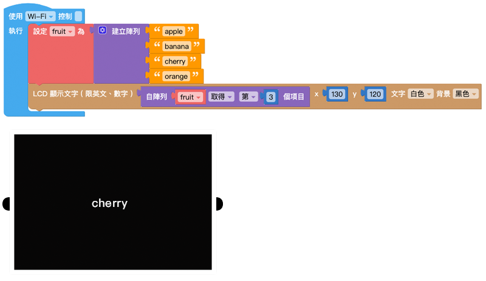
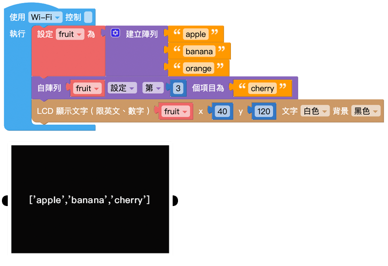
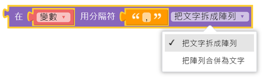
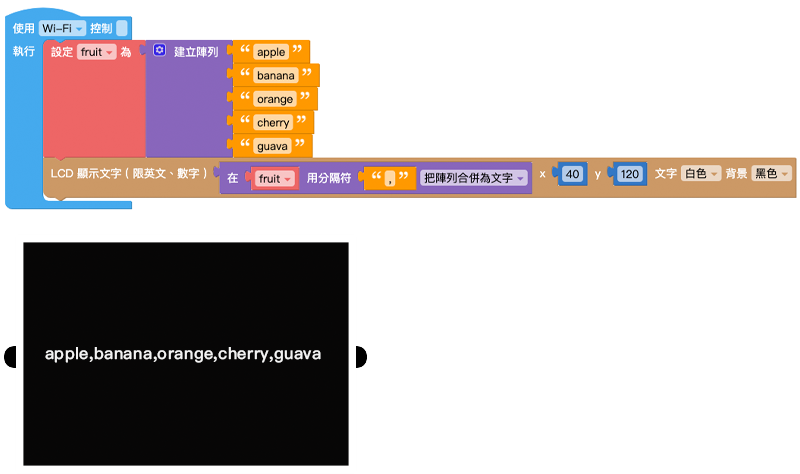
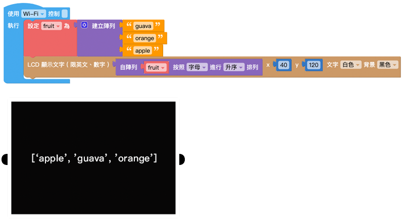

陣列
陣列可以將數字、文字、列表或變數，按照順序組合起來，這些按序排列資料集合就稱作陣列。一個陣列可以再細分為多個項目，或是一個陣列內還包含其他陣列。在進行比較複雜的運算時，也會透過陣列的操作來實現。
建立陣列、空陣列
- 「建立陣列」積木可以透過指定位置放入對應的內容，建立一個帶有數值的陣列。
- 「空陣列」積木會建立一個陣列容器，也就是裡面沒有包含任何項目的陣列。
點擊積木的「設定」按鈕，可以改變陣列內的項目數量，當數量為 0，積木就會變成空陣列，可以藉由後續操作改變陣列內的項目內容。

範例：展示陣列內的所有水果
將「變數 fruit」設定為陣列，並在陣列項目中放入各種水果名稱。
使用「LCD 顯示文字」積木顯示「變數 fruit」。
避免文字顯示超出螢幕，調整 x 成 50。
按下執行，可以看到 Web:AI 螢幕顯示 ['apple', 'orange', 'banana']。

重複陣列內項目
「重複陣列內項目」積木可以建立一個陣列，並讓陣列內的項目重複特定數量。當陣列內需要填入大量重複的項目時，就只需要設定一次。
範例：鉛筆盒內有 5 支筆
使用「變數 pencil box」，後面放入「重複陣列內項目」積木。
將「文字」積木放入陣列中，並輸入「pen」。
使用「LCD 顯示文字」積木顯示「變數 pencil box」。
避免文字顯示超出螢幕，調整 x 成 50。
按下執行，可以看到 Web:AI 螢幕顯示 ['pen', 'pen', 'pen', 'pen', 'pen']。

陣列長度
「陣列長度」積木可以取得個陣列的項目總數。

如果是空陣列則陣列長度為 0。

範例：查看陣列中有多少水果欄位？
將「變數 fruit」設定為陣列，並在陣列項目中放入各種水果名稱。
使用「變數 number」作為水果欄位的數量，放入「陣列長度」積木，後方放入「變數 fruit」。
使用「LCD 顯示文字」積木顯示「變數 number」。
按下執行，可以看到 Web:AI 螢幕顯示 6。

因為「陣列長度」積木讀取的是陣列的項目數量 ( 水果欄位數量 )，所以即使項目中沒有放入水果，螢幕也會顯示相同的數字。

索引項目位置
「索引項目位置」積木能在一個陣列中，從最前面或最後面，找到特定項目所在的位置，並回傳該位置的順序號碼。

範例：水果陣列中，第一顆橘子出現在什麼位置？
使用「變數 fruit」和「陣列」積木，並在陣列項目中放入各種水果名稱。
設定「變數 order」，後方放入「索引項目位置」積木，從「fruit」陣列最前面索引項目「orange」。
使用「LCD 顯示文字」積木顯示「變數 order」。
按下執行，可以看到 Web:AI 螢幕顯示 4，代表第一顆橘子出現在 第 4 個位置。

取得陣列內容
「取得陣列內容」積木可以取得陣列中某個項目的值、或是取得某個項目的值之後，同時移除該項目。( 項目取得方式包含：第幾個、倒數第幾個、第一個、最後一個和隨機 )

範例：找到第 3 個水果
使用「變數 fruit」和「陣列」積木，並在陣列項目中放入各種水果名稱。
使用「LCD 顯示文字」積木，顯示「取得陣列」積木取得陣列中的第 3 項。
按下執行，可以看到 Web:AI 螢幕顯示 cherry，代表陣列中的第 3 個項目是 cherry。

範例：移除第 3 個水果，並說出後來的第 3 個水果
接續上一個範例，完成建立陣列。
在陣列後面使用自「陣列 fruit」移除第 3 個項目。
使用「LCD 顯示文字」積木，顯示「取得陣列」積木取得陣列中的第 3 項。
按下執行，可以看到 Web:AI 螢幕顯示 orange，代表原本陣列中的第 3 個項目 cherry 被移除，改由原本的第 4 個項目 orange 遞補。

設定陣列內容
「設定陣列內容」積木可以針對陣列的項目進行設定或移除。( 項目取得方式包含：第幾個、倒數第幾個、第一個、最後一個和隨機 )

範例：將第 3 個水果改為 cherry
使用「變數 fruit」和「陣列」積木，並在陣列項目中放入各種水果名稱。
下方使用自「陣列 fruit」中設定第 3 個項目為 cherry。
使用「LCD 顯示文字」積木，顯示「陣列 fruit」，並設定 x 為 40，避免文字超出螢幕。
按下執行，可以看到 Web:AI 螢幕顯示 [‘apple’, ‘banana’, ‘cherry’]，代表第 3 個水果已經被改為 cherry。

文字與陣列轉換
「文字與陣列轉換」積木可以將帶有「分隔符」( 類似空白、逗號、分號...等分隔符號 ) 的文字轉換為陣列，或是將陣列合併為一串文字。
- 從文本製作陣列：文字 → 陣列
- 從陣列拆出文本：陣列 → 文字

範例：用文字展示水果陣列，並用逗號分開
使用「變數 fruit」和「陣列」積木，並在陣列項目中放入各種水果名稱。
使用「把陣列合併為文字」，將陣列變成文字形式。
使用「LCD 顯示文字」積木，並設定 x 為 40，避免文字超出螢幕。
按下執行，可以看到 Web:AI 螢幕顯示 apple,banana,orange,cherry,guava。

如果將「分隔符」改成「/」符號，可以看到 Web:AI 螢幕顯示 apple/banana/orange/cherry/guava。
陣列排序
「陣列排序」積木會將指定的陣列做數字、字母的排序，排序後會形成一個新的陣列，不會影響原本陣列的排序。
- 依英文升序：a ~ z
- 依英文降序：z ~ a
- 依數字升序：小 ~ 大
- 依數字降序：大 ~ 小

範例：讓水果依英文字母順序排列
使用「變數 fruit」和「陣列」積木，並在陣列項目中放入各種水果名稱。
加入另一個變數「變數 text」，使用「陣列排序」積木讓陣列依照英文字母排序。
使用「LCD 顯示文字」積木，顯示「order」，並設定 x 為 40，避免文字超出螢幕。
按下執行，可以看到 Web:AI 螢幕顯示 [‘apple’, ‘guava’, ‘orange’]，陣列中的項目依照 a~z 的順序排列。
